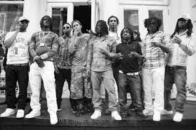
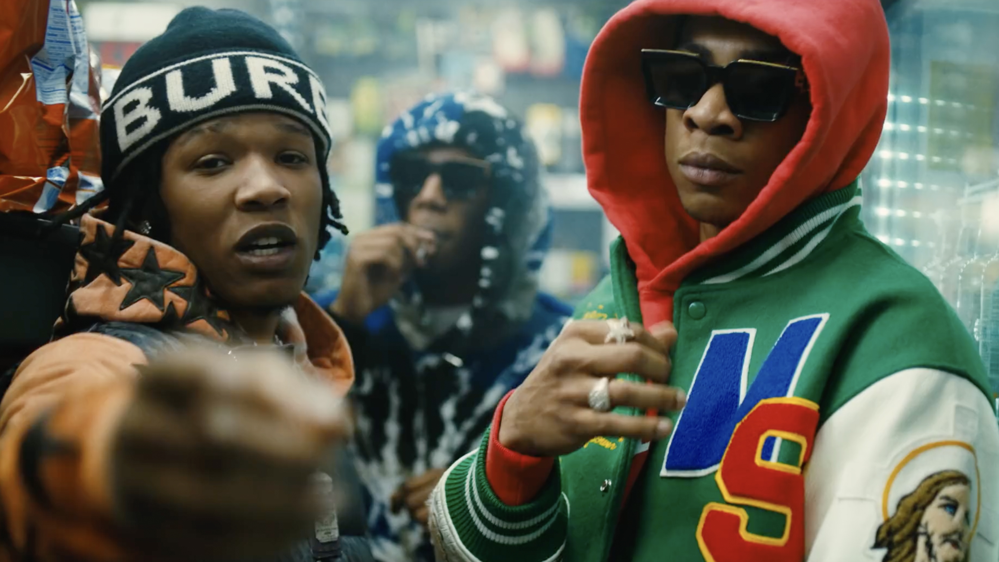
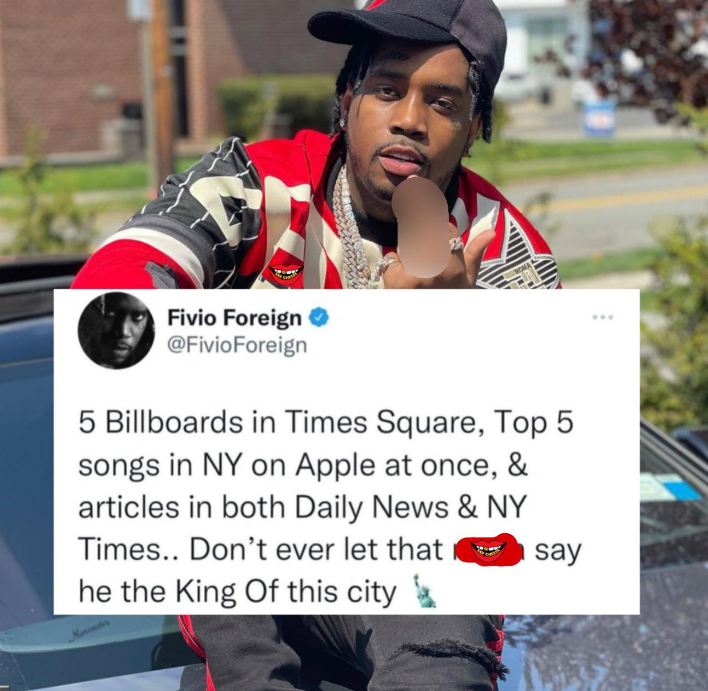
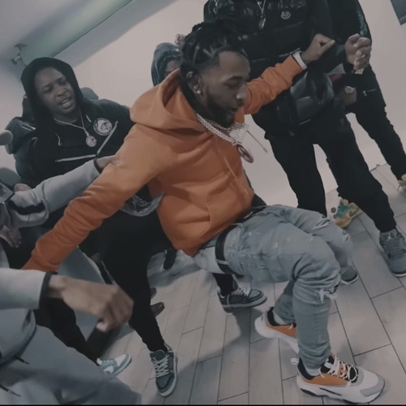

Drill music originated in the early 2010s in Chicago, characterized by its gritty lyrics and unique beats.
Drill music is a representation of certain facets of black culture in the United States.

Greatest Shots

This features two artists from Brooklyn, New York. Although Chicago was the birthplace of drill, New York has taken
over as the prominent drill scene in America, with tons of fresh, up-and-coming artists emerging from the region.

This tweet highlights the success drill artists have had in recent years. To be featured on multiple billboards on Times Square
and top 5 on Apple Music is no simple feat and a testament to the hard work some artists pour into their careers.

Drill is a culture, and a huge part of that culture is community and dance. Here we see a common drill scene: a few men hanging out and dancing to drill beats.
This comraderie is delightful and a major reason to why I like this genre.
Why I Chose This
During the pandemic, I would spend a lot of time on the computer, and one of the things I would do often is listen to music,
discovering new artists in the process. I stumbled upon the UK rap scene, and being a musician, begin to notice a pattern, a style, in the way they rapped that I hadn't heard before, which I learned was drill.
I was excited about this "newer" genre and have been following its journey into the mainstream for a few years, still listening to drill from the UK but also from the US.